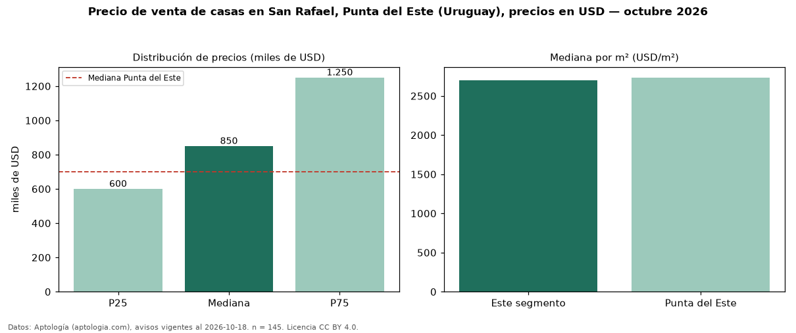

Precio de venta de casas en San Rafael, Punta del Este (Uruguay), precios en USD — octubre 2026
En San Rafael, Punta del Este (Uruguay), la mediana de precio de venta de casas es USD 850.000, según 145 avisos vigentes. Frente a la mediana de Punta del Este para casas (USD 700.000), queda 21 % por encima. Por metro cuadrado, la mediana es USD 2.698/m² (n = 136 avisos con área), 1 % por debajo de Punta del Este (USD 2.734/m²). Con el precio por m² de alquiler del mismo segmento (USD 28,06/m² al mes), la rentabilidad bruta implícita es 12,5 % anual (aproximación con medianas de ofertas distintas). El área mediana anunciada es 328 m². El segmento con más oferta es el de 3 o más habitaciones (141 avisos, mediana USD 850.000). La mitad central de los avisos va de USD 600.000 a USD 1,25 millones (razón 2,1), una dispersión alta. Por precio mediano es el puesto 12 de 22 barrios de Punta del Este con al menos 30 avisos de casas en venta (USD): en la franja media. Datos: Aptología (aptologia.com), CC BY 4.0 — https://www.aptologia.com/uy/venta/punta-del-este. Archivos: PDF, CSV con las cifras y gráfica PNG.

| Avisos únicos | 145 |
|---|---|
| Percentil 25 | COP 600.000 |
| Mediana | COP 850.000 |
| Percentil 75 | COP 1.250.000 |
| Mediana por m² | COP 2.697 |
Fuente: avisos vigentes de portales inmobiliarios recopilados por Aptología, deduplicados (mínimo 30 avisos únicos por celda). Precios pedidos, no cerrados. Fecha: 2026-10-18.